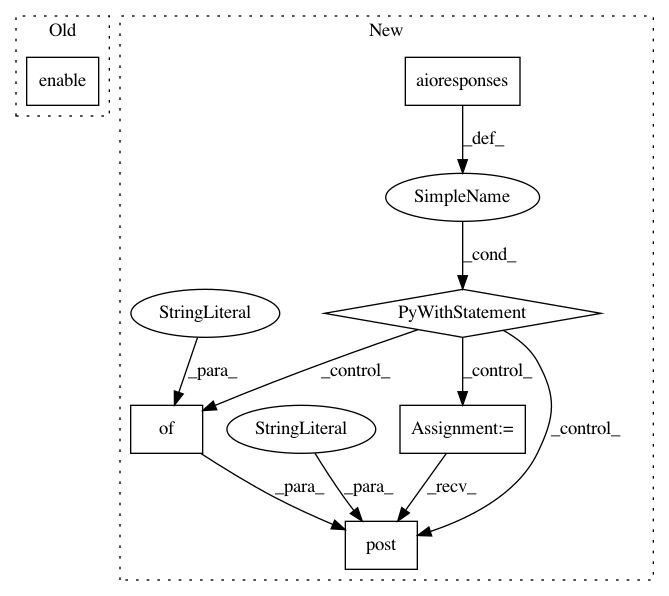

87826c4ccb971911752adbc4bdac8d3e7c28989e,tests/test_channels.py,,test_telegram_channel,#,212
Before Change
"https://api.telegram.org/bot123:YOUR_ACCESS_TOKEN/setWebhook",
body="{"ok": true, "result": {}}")
httpretty.enable()
from rasa_core.channels.telegram import TelegramInput
from rasa_core.agent import Agent
from rasa_core.interpreter import RegexInterpreter
After Change
def test_telegram_channel():
// telegram channel will try to set a webhook, so we need to mock the api
with aioresponses() as mocked:
mocked.post(
"https://api.telegram.org/bot123:YOUR_ACCESS_TOKEN/setWebhook",
payload={"ok": True, "result": {}})
from rasa_core.channels.telegram import TelegramInput
from rasa_core.agent import Agent
from rasa_core.interpreter import RegexInterpreter
// load your trained agent
agent = Agent.load(MODEL_PATH, interpreter=RegexInterpreter())
input_channel = TelegramInput(
// you get this when setting up a bot
access_token="123:YOUR_ACCESS_TOKEN",
// this is your bots username
verify="YOUR_TELEGRAM_BOT",
// the url your bot should listen for messages
webhook_url="YOUR_WEBHOOK_URL"
)
// set serve_forever=True if you want to keep the server running
s = agent.handle_channels([input_channel], 5004, serve_forever=False)
// END DOC INCLUDE
// the above marker marks the end of the code snipped included
// in the docs
try:
assert s is not None
finally:
s.cancel()
def test_handling_of_telegram_user_id():
// telegram channel will try to set a webhook, so we need to mock the api
httpretty.register_uri(
In pattern: SUPERPATTERN
Frequency: 3
Non-data size: 6
Instances
Project Name: RasaHQ/rasa
Commit Name: 87826c4ccb971911752adbc4bdac8d3e7c28989e
Time: 2019-01-21
Author: tom@rasa.com
File Name: tests/test_channels.py
Class Name:
Method Name: test_telegram_channel
Project Name: RasaHQ/rasa
Commit Name: 87826c4ccb971911752adbc4bdac8d3e7c28989e
Time: 2019-01-21
Author: tom@rasa.com
File Name: tests/test_utils.py
Class Name:
Method Name: test_endpoint_config
Project Name: RasaHQ/rasa
Commit Name: 87826c4ccb971911752adbc4bdac8d3e7c28989e
Time: 2019-01-21
Author: tom@rasa.com
File Name: tests/test_channels.py
Class Name:
Method Name: test_callback_calls_endpoint